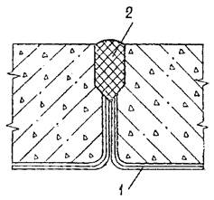
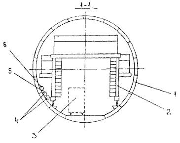
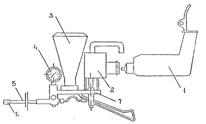

ВЕДОМСТВЕННЫЕ СТРОИТЕЛЬНЫЕ НОРМЫ
ПРАВИЛА
ПРОИЗВОДСТВА И ПРИЕМКИ РАБОТ ПО ГЕРМЕТИЗАЦИИ СТЫКОВ И ОТВЕРСТИЙ СБОРНОЙ ТОННЕЛЬНОЙ ОБДЕЛКИ ПРИ ЗАКРЫТОМ СПОСОБЕ
СТРОИТЕЛЬСТВА
ВСН 130-92
МОСКВА 1992
ВЕДОМСТВЕННЫЕ СТРОИТЕЛЬНЫЕ НОРМЫ
ПРАВИЛА
ПРОИЗВОДСТВА И ПРИЕМКИ РАБОТ ПО ГЕРМЕТИЗАЦИИ СТЫКОВ И ОТВЕРСТИЙ СБОРНОЙ
ТОННЕЛЬНОЙ ОБДЕЛКИ ПРИ ЗАКРЫТОМ СПОСОБЕ СТРОИТЕЛЬСТВА
ВСН 130-92
МОСКВА 1992
Разработаны Всесоюзным ордена Октябрьской революции научно-исследовательским институтом транспортного строительства (ЦНИИСом) - д-р техн. наук В. Е. МЕРКИН, кандидаты техн. наук В. Ф. САРАБЕЕВ. Б. Н. ВИНОГРАДОВ, Б. М. СИНЕКАЕВ, В. М. АУЭРБАХ, Д. Я. ФРЕНКЕЛЬ (пп. 2.58-2.64), инженеры В. Д. МОГИЛЕВСКИЙ (ЦНИИС), Л. М. ЧИЖОВА (СКТБ Главтоннельметростроя), Ю. Н. АБРАМОВ (Главтоннельметрострой).
Внесены Всесоюзным ордена Октябрьской революции научно-исследовательским институтом транспортного строительства.
Подготовлены к утверждению отделом научно-технического развития Государственной корпорации «Трансстрой».
С введением в действие «Правил производства и приемки работ по герметизации стыков и отверстий сборной тоннельной обделки при закрытом способе строительства» ВСН 130-92 теряют силу «Технические указания по гидроизоляции стыков, отверстий для нагнетания и болтовых отверстий в сборной железобетонной обделке тоннелей метрополитенов, сооружаемых закрытым способом» ВСН 130-66 и «Технические указания по гидроизоляции стыков сборной обделки тоннелей метрополитена быстросхватывающимся уплотняющим составом-БУС» ВСН 149-68.
Согласованы Министерством путей сообщения.
Настоящие правила разработаны в развитие СНиП III-44-77 «Тоннели железнодорожные, автодорожные и гидротехнические. Метрополитены».
|
Государственная корпорация «Трансстрой» |
Ведомственные строительные нормы |
ВСН 130-92 Государственная корпорация «Трансстрой» |
|
|
Правила производства и приемки работ по герметизации стыков и отверстий сборной тоннельной обделки при закрытом способе строительства |
|||
|
Взамен
|
|
Настоящие Правила устанавливают общие требования к производству и приемке работ по герметизации стыков, болтовых соединений, монтажных отверстий и отверстий для нагнетания сборной чугунной и железобетонной обделок тоннелей метрополитенов и транспортных тоннелей, сооружаемых закрытым способом, при ожидаемом гидростатическом давлении грунтовых вод до 0,5 МПа для чугунных и до 0,15 МПа для железобетонных обделок. При ожидаемом давлении более 0,5 МПа вопросы герметизации должны быть отражены в специальном разделе проекта.
1.1. Герметизация стыков, болтовых соединений, монтажных и тампонажных (для нагнетания) отверстий сборных железобетонных и чугунных обделок производится с целью предотвращения проникания грунтовых вод и обеспечения нормальных условий эксплуатации метрополитенов и транспортных тоннелей.
1.2. Настоящие Правила базируются на руководящих и нормативных документах (справочное приложение 1) и дополняют их в части герметизации стыков, болтовых соединений, монтажных и тампонажных отверстий сборных обделок тоннелей и стволов шахт.
1.3. Правила должны соблюдаться персоналом, осуществляющим герметизацию (гидроизоляцию) сборных обделок, и учитываться при разработке проектов производства работ, при сходном, операционном, приемочном и инспекционном контроле.
|
Внесены
Всесоюзным |
Утверждены Государственной корпорацией «Трансстрой» № МО-68 от 23.03.92 |
Срок
введения |
1.4. Работы по гидроизоляции должен выполнять персонал, обученный и сдавший технический минимум по правилам производства работ на выполнение соответствующего вида герметизации.
1.5. Изделия и материалы, используемые для герметизации стыков, болтовых соединений, монтажных и тампонажных отверстий в сборных тоннельных обделках, должны отвечать требованиям государственных стандартов и технических условий (обязательное приложение 2).
Другие изделия и материалы могут применяться только после опытной проверки и соответствующего заключения организации, являющейся автором данных норм.
1.6. Оборудование, механизмы, инвентарь, инструменты и приспособления, применяемые при работах по герметизации стыков, болтовых соединений и отверстий, должны соответствовать требованиям, перечисленным в рекомендуемом приложении 3.
1.7. Работы по герметизации следует выполнять с соблюдением действующих требований по охране труда и технике безопасности, а также требований, изложенных в разделе 4 настоящих Правил.
2.1. Проведение работ по герметизации стыков, болтовых соединений, монтажных и тампонажных отверстий сборных тоннельных обделок должно обеспечить полное отсутствие течей при установившемся гидростатическом давлении на обделку.
2.2. К работам по герметизации тоннельной обделки следует приступать после зафиксированного маркшейдерской службой прекращения всех деформаций обделки, происходящих в результате развития горного давления или в связи с проводимыми в непосредственной близости проходческими или другими строительно-монтажными работами. Работы по герметизации не должны проводиться ближе 50 м от мест ведения буровзрывных работ, ближе 20 м от мест предполагаемого раскрытия проемов и от мест проведения контрольного нагнетания.
2.3. Работы по герметизации следует выполнять при температуре в тоннеле не ниже 5°С. Обделки тоннелей, сооружаемых с помощью замораживания грунтов, должны быть загерметизированы после оттаивания грунтов.
2.4. Перед началом проведения работ по герметизации очередного участка тоннеля фильтрация воды через обделку должна быть исключена путем контрольного или уплотнительного нагнетания, дренирования воды или водопонижения.
2.5. Работы по герметизации в сводовой части и по стенам тоннеля должны производиться с последовательно перемещаемых подмостей. Герметизация эскалаторных тоннелей должна осуществляться с подмостей, перемещаемых сверху вниз (см. рекомендуемое приложение 3). Допускается использование передвижных подмостей других конструкций, отвечающих требованиям безопасности.
2.6. Работы по герметизации лотковой части обделки должны проводиться захватками длиной 20-30 м. Участок в пределах захватки должен быть полностью очищен от грязи и посторонних предметов, а вода в лотковой части удалена из всех ячеек тюбингов или ребристых блоков.
На выделенных для проведения работ по герметизации участках не должно производиться никаких других работ.
2.7. Последовательность выполнения работ по герметизации сборной тоннельной обделки должна быть следующей:
заделка трещин в тюбингах, ремонт или тампонаж сколов и трещин в блоках;
герметизация болтовых соединений или монтажных болтовых отверстий;
герметизация тампонажных отверстий;
герметизация стыков сборной обделки с ремонтом сколов стенок чеканочных канавок.
2.8. К началу работ по герметизации на рабочем месте должны быть необходимые изделия, материалы, оборудование, инвентарь, инструмент и приспособления, предусмотренные приложениями 2 и 3, а участок тоннеля должен быть обеспечен нормально действующей вентиляцией, магистралью сжатого воздуха, водопроводной магистралью и электросетью с рассчитанным количеством постоянных осветительных точек и переносных ламп.
2.9. Условия хранения и способы транспортировки изделий и материалов, применяемых для герметизации, должны отвечать требованиям соответствующих стандартов, технических условий (см. обязательное приложение 2).
2.10. Герметизацию стыков, болтовых соединений и тампонажных отверстий в обделках из чугунных тюбингов следует проводить после контрольного нагнетания за обделку.
2.11. Герметизацию болтовых соединений в обделках из чугунных тюбингов следует осуществлять при замене монтажных болтов на постоянные болтовые соединения с комплектом асбобитумных или сэвиленовых и металлических шайб (рис. 1 и 2).
Рис. 1. Болтовое соединение с комплектом асбобитумных и металлических шайб в стыке чугунных тюбингов перед затяжкой:
1 - болтовое соединение; 2 - металлическая шайба (металлическая сферическая оболочка); 3 - головка болта; 4 - армирующее кольцо из битуминированных асбестовых нитей; 5 - гайка; 6 - асбобитумная масса; 7 - свинец или алюминатное вяжущее в чеканочной канавке; 8 - ребро чугунного тюбинга
Установка постоянных болтовых соединений с комплектом асбобитумных или сэвиленовых и металлических шайб непосредственно при монтаже обделки допускается при строительстве перегонных тоннелей и притоннельных сооружений. При затапливаемой лотковой части забоя установка постоянных болтовых соединений допускается только выше возможного уровня воды в забое.
Рис. 2. Болтовое соединение с комплектом сэвиленовых и металлических шайб в стыке чугунных тюбингов:
А - в незатянутом положении; Б - в затянутом положении; В - в неправильно затянутом положении, которое не допускается
2.12. Постоянные болтовые комплекты должны подаваться к месту работы в специальных контейнерных емкостях с окрашенными битумным лаком поверхностями всех металлических деталей. Болтовые комплекты не следует хранить вне тары и транспортировать навалом. К началу установки болтовых комплектов они должны быть выдержаны в тоннеле в течение нескольких часов для воспринятия его температуры.
2.13. При замене монтажных болтов на постоянные освобожденные болтовые отверстия, зенковки и цековочные поверхности тюбингов должны быть очищены от грязи и ржавчины, протерты насухо и покрыты битумным лаком-грунтовкой (обязательное приложение 4). До установки болтовых соединений грунтовка должна быть высушена. Сушка может быть ускорена обдувкой струёй сжатого воздуха.
2.14. При установке в болтовое отверстие болта асбобитумные или сэвиленовые шайбы должны вводиться своими коническими частями в зенковки тюбингов. При асбобитумных шайбах более толстая металлическая шайба должна находиться под гайкой.
Гайка должна быть навинчена на болт вручную на 2-3 шага резьбы. Затяжку болтовых соединений следует осуществлять пневматическим сболчивателем ПСГ-1 или ПСГ-1С в зависимости от размера болта или гайковертом ИП-3205А. Развиваемый крутящий момент, соответствующий типу обделки («С», «Э» или «П»), указан в п. 3.10. Допускается использование других гайковертов и сболчивателей с теми же (по п. 3.10) техническими характеристиками.
При затяжке болта должно предотвращаться его проворачивание что обеспечивается удержанием головки болта ключом, упирающимся в борт тюбинга.
2.15. При правильной затяжке болта металлическая шайба под гайкой должна быть полностью выпрямленной, а под головкой болта - сохранять некоторую выпуклость. При этом избыточная часть асбобитумной массы должна быть выдавлена. Перегиб металлической шайбы в сторону болтового отверстия при сэвиленовых шайбах не допускается.
2.16. В случае срыва резьбы болта при затяжке болтовой комплект подлежит замене.
2.17. При появлении течи из болтового отверстия в процессе ведения дальнейших работ по герметизации ее следует ликвидировать дополнительной подтяжкой болтов. Если течь при полностью выпрямленной металлической шайбе под головкой болта ликвидировать не удается, болтовой комплект подлежит замене.
2.18. Извлеченные из обделки при замене болтовых комплектов болты и шайбы следует помещать в контейнерную емкость и выдавать на поверхность.
2.19. В случае обнаружения неполного совпадения болтовых отверстий в тюбингах допускается рассверловка отверстий до нормального проходного отверстия для болта.
2.20. При наличии за обделкой высокотемпературных геотермальных вод, а также в других особых случаях следует болтовые комплекты применять со свинцовыми шайбами в соответствии с «Инструкцией по устройству гидроизоляции сборных железобетонных и чугунных обделок тоннелей метрополитенов закрытого способа работ», утвержденной Главтоннельметростроем.
2.21. Установка постоянных болтовых соединений при монтаже обделки должна осуществляться с принятием необходимых мер по предотвращению загрязнения болтовых отверстий, зенковок и деталей болтовых комплектов.
У тюбингов, доставляемых к месту работ, должны быть тщательно очищены от смазки поверхности болтовых отверстий, зенковок и цековок.
В холодное время года тюбинги должны доставляться к забою не менее чем за 4 ч до начала монтажа очередного кольца для приобретения ими постоянной температуры тоннеля.
2.22. Установленные при монтаже обделки под прикрытием оболочки щита болтовые комплекты должны быть подтянуты при передвижке щита.
Правила установки шайб из сэвилена в болтовые соединения чугунных тюбингов обделки тоннелей метрополитена даны в обязательном приложении 5.
2.23. Тампонажные отверстия в чугунных тюбингах должны быть загерметизированы:
чугунными пробками с помещенными под их заплечиками уплотняющими асбобитумными прокладками (рис. 3);
Рис. 3. Пробка с асбобитумной герметизирующей прокладкой в тюбинговом отверстии для нагнетания перед затяжкой:
1 - чугунная пробка; 2 - асбобитумная гидроизоляционная прокладка; 3 - армирующее кольцо из битуминированных асбестовых нитей; 4 - отверстие для нагнетания; 5 - чугунный тюбинг
полимерными (полиэтиленовыми) пробками, состоящими из двух деталей - стакана и клина (рис. 4). Пробки должны отвечать требованиям, приведенным в обязательном приложении 2.
2.24. Тампонажные пробки к рабочему месту должны доставляться в комплекте в заводской упаковке. Запрещается высыпать пробки из заводской тары. Комплекты пробок на месте
работ должны быть выдержаны в течение нескольких часов до их установки для приобретения ими температуры тоннеля.
2.25. Перед установкой пробки тампонажное отверстие должно быть очищено от цементного раствора, резьба прогнана метчиком соответствующего размера, а поверхность тюбинга у отверстия очищена и окрашена битумным лаком в соответствии с требованиями, изложенными в приложении 4. Нанесенные пленки лаков необходимо высушить в течение не менее 2-х часов.
Рис. 4. Пробка тампонажная полиэтиленовая с полиэтиленовым клином в тюбинговом отверстии для нагнетания перед забивкой клина:
1 - стакан; 2 - клип; 3 - чугунный тюбинг
2.26. Комплекты пробок следует брать для установки непосредственно из заводской тары и ввинчивать вручную на 2-3 шага резьбы.
Чугунные пробки следует заворачивать торцевым ключом до полного обжатия прокладки заплечиками пробки. Зазор между заплечиками пробки и поверхностью тюбинга не должен превышать 2 мм.
Полиэтиленовые пробки следует заворачивать ключом конструкции СКТБ Главтоннельметростроя с последующей забивкой клина отбойным молотком со специальной насадкой.
Технология работ по установке полимерных пробок в чугунную обделку изложена в обязательном приложении 6.
2.27. Стыки тюбингов обделок должны герметизироваться зачеканкой канавок быстросхватывающимися материалами на алюминатных вяжущих: БУС, БРЦ.
Стыки тюбингов в обделках станций, тяговопонизительных подстанций, пересадочных узлов, эскалаторных тоннелей, а также вентиляционных стволов и перегонных тоннелей в условиях знакопеременных температур или возможного перепада температур внутренней поверхности обделки на 25°C и более следует герметизировать зачеканкой канавок свинцовой проволокой или освинцованным шнуром с последующим заполнением остающейся части канавки составами алюминатных вяжущих.
2.28. Перед началом работ по герметизации стыков тюбингов все болтовые соединения должны быть подтянуты до полного выпрямления металлической шайбы со стороны головки болта.
При необходимости должно быть проведено повторное контрольное и уплотнительное нагнетание за обделку.
2.29. Работы по герметизации стыков следует начинать в сводовой части тоннеля с переходом на стены и в лоток.
2.30. Зачеканку свинцовой проволоки и алюминатных вяжущих в канавки следует производить рубильно-чеканочными молотками типов Р-1, Р-2, Р-3.
К рубильно-чеканочным молоткам должны быть приданы чеканы в наборе толщиной 2, 4, 6, 8, 10, 12, 15, 18, 21, 24 и 27 мм, а состав быстросхватывающихся алюминатных вяжущих и их физико-механические свойства должны отвечать требованиям, приведенным в обязательном приложении 7.
2.31. Заполнение алюминатным вяжущим канавок в стыках тюбингов следует производить с помощью специальных цементоукладчиков ЦУЛ-1Т послойно. Каждый уложенный слой должен сразу уплотняться при помощи чеканочного молотка. Канавку следует заполнять и уплотнять повторно до тех пор, пока она не будет заполнена доверху. Местные углубления на поверхности зачеканки не должны превышать 2 мм.
Каждый уложенный слой после уплотнения периодически (через 2-3 ч), а зачеканенные канавки в течение первых суток должны быть орошены водой не менее трех раз.
2.32. Чеканочные канавки в стыках чугунной обделки должны быть очищены до металлического блеска механически или предназначенным для этого пескоструйным аппаратом и продуты сжатым воздухом.
Для пескоструйной очистки канавок следует применять сухой и чистый кварцевый песок с крупностью зерен от 1 до 3 мм.
Не допускается повторно использовать песок, применявшийся для очистки канавок.
2.33. Свинцовая проволока или ее отрезки перед укладкой в канавки должны быть: смотаны с барабана или катушки; нарезаны на куски длиной, равной длине канавки плюс удвоенная ширина канавки, а для кольцевых канавок - не менее 2,5 м; очищены от окисной пленки; сплющены до толщины, примерно равной ширине канавки.
Во избежание появления налетов ржавчины на поверхности стенок канавок, разрыв во времени между их очисткой и укладкой свинцовой проволоки должен быть не более 8 ч.
2.34. При укладке свинцовой проволоки в кольцевые канавки свода необходимо отогнуть под углом 90° конец отрезка длиной 150-200 мм для обеспечения нахлестки в месте предполагаемого стыка.
Стыковать отрезки свинцовой проволоки в кольцевых канавках следует с перекрытием концов не менее чем на 30 мм с последующей тщательной расчеканкой места нахлестки.
В местах пересечения продольных и кольцевых канавок свинцовую проволоку следует стыковать также внахлестку, но с перекрытием на ширину канавки концов отрезка. Концы проволоки из продольных канавок должны упираться торцами в стенки кольцевых канавок. Эти концы необходимо тщательно зачистить для обеспечения герметичного стыкования при чеканке.
Вдавливать до дна канавки свинцовую проволоку допускается ручным чеканом или с помощью чеканочного наконечника молотка при легких его ударах.
2.35. Свинцовую проволоку следует зачеканивать пневматическим чеканочным молотком со вставленным в него чеканочным наконечником, толщина рабочей части которого на 1-2 мм меньше ширины канавки.
В процессе чеканки свинца необходимо непрерывно передвигать молоток вдоль канавки без сильного нажима на его рукоятку для того, чтобы избежать перерезания проволоки.
Продолжительной сосредоточенной чеканки свинца на одном и том же месте следует избегать. При этом наконечник должен быть направлен перпендикулярно дну канавки.
Образующийся при чеканке свинца на стенках канавок заусенцы следует убрать чеканочным наконечником, причеканив его к основной массе свинца. При снятии свинцовых заусенцев чеканочный наконечник должен быть направлен под углом 20-30° к стенкам канавки.
2.36. Зачеканка алюминатным вяжущим считается законченной, когда при ударах металлическим предметом по уложенному слою отсутствует глухой звук.
Зачеканка свинца считается законченной, когда при легких ударах молотка по уложенному слою он больше не вдавливается в канавку, и слышится металлический звук.
2.37. Течи, появившиеся в зачеканенных канавках стыков, в том числе и связанные с перестановкой скреплений, снятия водопонижения, следует ликвидировать повторным выполнением всего комплекса работ по герметизации после удаления дефектной чеканки.
2.38. Заделку трещин в тюбингах следует выполнять по согласованию с проектной организацией.
2.39. Заделка трещин в чугунных тюбингах может осуществляться при струйном водопритоке - комбинированным уплотнением, сочетающим подслой свинца толщиной 5-6 мм, прижатым дрязгой, а при капеже - слоем дрязги (толщина одного слоя примерно 10 мм).
Металломасса «дрязга», используемая для герметизации трещин, должна изготавливаться в соответствии с правилами, изложенными в обязательном приложении 8.
2.40. На участке тоннеля, где предстоит заделка трещин, должны быть удалены стяжки, выполнено контрольное нагнетание, гидроизолированы болтовые отверстия, отверстия для нагнетания и стыки тюбингов, а маркшейдерскими наблюдениями подтверждена стабильность размеров трещин.
2.41. Работы, связанные с заделкой трещин, должны включать: вырубку канавки по всей длине трещины (если ширина трещины меньше 6 мм); очистку поверхности стенок канавки; зачеканку канавки и трещины свинцовой проволокой или дрязгой.
2.42. Канавку по трещине следует вырубать в чугуне пневматическим молотком, снабженным наконечником с острым закаленным зубилом. Ширина канавки 8-10 мм, глубина 15- 17 мм.
2.43. Применяемая для заделки трещин свинцовая проволока должна быть очищена от окислов и сплющена до толщины, соответствующей канавке или ширине раскрытия трещины.
2.44. Очищенный отрезок свинцовой проволоки следует заводить в канавку с помощью ручной чеканки легкими ударами по ней ручным молотком, затем зачеканивать пневматическим молотком.
Свинцовую проволоку следует чеканить, не допуская образования заусенцев на стенках канавки. При чеканке свинцовой проволоки нельзя стыковать в канавке несколько ее отрезков.
2.45. Гидроизоляцию трещин следует считать достаточной при отсутствии течи и наличии у уложенного слоя свинца и дрязги ровной поверхности и металлического звука под воздействием легких ударов молотка.
2.46. Герметизация стыков быстросхватывающимися материалами на алюминатных вяжущих, монтажных и тампонажных отверстий в сборных железобетонных обделках в условиях ожидаемого гидростатического давления на конструкцию следует проводить после контрольного нагнетания. В целях предотвращения вытекания раствора через стыки элементов обделки при контрольном или уплотнительном нагнетании допускается предварительная заделка стыков за пределами чеканочной канавки быстросхватывающимися материалами.
В условиях, исключающих воздействие напорных вод на конструкцию, герметизация сборных железобетонных обделок может проводиться до контрольного нагнетания.
2.47. В обделках тоннелей из железобетонных элементов монтажные отверстия и отверстия для нагнетания следует герметизировать послойным (в 2-3 слоя) заполнением их быстросхватывающимися алюминатными вяжущими БУС и БРЦ с последующей зачеканкой каждого слоя.
2.48. Алюминатное вяжущее, зачеканиваемое в болтовые и тампонажные отверстия, должно быть предварительно увлажнено водой в количестве 15-20% от его массы, а при наличии остаточных течей - 8% для первого слоя вяжущего.
2.49. Монтажные отверстия должны быть очищены от раствора полностью, а тампонажные - на глубину не менее 50 мм, а затем продуты сжатым воздухом и промыты водой.
Заполнение отверстий алюминатным вяжущим следует производить трубчатыми набивками с перемещающимся дном, наружный диаметр которых должен быть на 5 мм меньше диаметра отверстия.
Уплотнение или чеканку алюминатного вяжущего следует производить торцевым чеканочным наконечником круглого сечения.
2.50. Стыки сборных железобетонных блоков следует герметизировать чеканкой канавок быстросхватывающимися алюминатными вяжущими БУС, БРЦ (рис. 5).

Рис. 5. Гидроизоляция стыка блоков сборной железобетонной обделки:
1 - наружная изоляция, наносимая на железобетонные элементы; 2 - чеканка алюминатным вяжущим (БУС, БРЦ) или торкретирование раствором на основе безусадочного цемента
2.51. Герметизации стыков должна предшествовать очистка канавок и промывка их водой под давлением, ремонт сколов стенок канавки.
2.52. Небольшие по длине и ширине сколы в зоне канавок следует отремонтировать путем расшивки места скола до правильной формы (по форме канавки) с последующей промывкой водой и зачеканкой дефектного места по схеме, приведенной на рис. 6, тем же материалом, что и в стыке.
2.53. Для зачеканки канавок алюминатные вяжущие следует затворять (увлажнять) различным количеством воды, отвечающей требованиям ГОСТ 23732-79:
при отсутствии водопритока через стыки обделки воды следует брать 15-18% от массы вяжущего; при слабой остаточной фильтрации воды через стыки для затворения первого слоя вяжущего воды следует брать 10-12% от массы вяжущего, а для последующих слоев - 15-18%.
Количество затворяемого водой вяжущего должно быть небольшим, чтобы его можно было израсходовать в течение 10 мин после затворения.
2.54. Заполнение алюминатным вяжущим канавок в стыках следует производить с помощью специальных цементоукладчиков ЦУЛ-1Б.
Затворенное (увлажненное) вяжущее следует укладывать послойно в 2-3 приема: вначале - в продольные канавки и в местах их сопряжении с кольцевыми, а затем - в кольцевые на длине 3-4 м. Каждый уложенный слой должен быть сразу же уплотнен при помощи чеканочного молотка.
2.55. Канавку следует заполнять и уплотнять повторно до тех пор, пока она не будет заполнена доверху. Местные углубления на поверхности зачеканки не должны превышать 5 мм.
При возобновлении работ после перерыва необходимо в стыкуемом месте срубить ранее выполненное уплотнение на длине 20-50 мм под углом 90° на всю глубину канавки.
Рис. 6. Уплотнение канавок железобетонной обделки в местах скола бетона:
1 - зачеканка БУС, БРЦ, ЦБ; 2 - заполнение раствором состава 1 : 2 (алюминатное вяжущее: песок); 3 - граница скола; 4 - дополнительная канавка в месте скола и за его пределами
Каждый уложенный слой после уплотнения периодически (через 2-3 ч), а зачеканенные канавки в течение первых суток должны быть орошены водой не менее трех раз.
2.56. Течи, появившиеся в зачеканенных канавках стыков, следует ликвидировать повторным выполнением всего комплекса работ по герметизации после удаления дефектного места или дефектного участка.
2.57. Уложенный слой следует считать достаточно уплотненным и чеканка алюминатным вяжущим законченной, когда при ударах металлическим предметом по его поверхности отсутствует глухой звук.
2.58. Заделка чеканочных канавок торкретированием допускается при проектном ожидаемом гидростатическом давлении на обделку не более 0,05 МПа.
2.59. Гидроизоляцию стыков и отверстий сборной железобетонной обделки способом торкретирования следует выполнять установками, технические характеристики которых не уступают приведенным в рекомендуемом приложении 3.
2.60. Гидроизоляция стыков, монтажных и тампонажных отверстий железобетонной обделки при отсутствии водопритока должна производиться механизированным способом раствором цементно-песчаной смеси состава 1 : 2 (безусадочный цемент: строительный песок) с добавками гидрофобизирующей жидкости или суперпластификаторов. Состав приготавливается порциями из расчета на 40 мин работы (обязательное приложение 9).
2.61. Гидроизоляция стыков и отверстий сборной железобетонной обделки при наличии небольшого остаточного притока грунтовых вод должна производиться механизированным способом цементно-песчаным раствором состава 1 : 1 (безусадочный цемент: строительный песок) с добавкой алюмината натрия, натрия фтористого технического или жидкого стекла. Раствор должен приготавливаться порциями из расчета на 20 мин работы.
2.62. В местах значительного притока грунтовых вод через обделку стыки должны зачеканиваться вручную, безусадочным цементом с добавкой алюмината натрия или натрия фтористого технического, или жидкого стекла в два-три слоя толщиной около 2 см каждый на участке длиной 3-4 м.
2.63. Гидроизоляцию радиальных и кольцевых стыков следует производить снизу вверх (начиная с лотка) с помощью пистолета-распылителя до полного заполнения стыка.
2.64. Поверхности стыков и отверстий, гидроизолированных раствором на основе безусадочного цемента, следует защищать от потерь влаги окраской разбавленным водой 1 : 2 латексом СКС-65ГП, наносимым механизированным способом на свежеуложенный раствор при отсутствии капельной влаги на его поверхности.
2.65. Герметизация стыков упругими резиновыми прокладками должна производиться при сооружении сборной железобетонной обделки, изготавливаемой по ТУ 35-2046-90 и эксплуатирующейся при гидростатическом напоре до 0,35 МПа.
2.66. Подготовка элементов обделки (блоков) к монтажу должна включать последовательную установку в проектное положение упругих резиновых прокладок, распределительных прокладок, пористого уплотнителя и клапанов.
2.67. Подготовку блоков допускается проводить при температуре окружающей среды и блоков не ниже +10°C на открытом воздухе или в помещении, оборудованном приточно-вытяжной вентиляцией, после входного контроля качества торцевых поверхностей блоков на соответствие требованиям ТУ 35-2046-90.
2.68. Крепить прокладки и уплотнители необходимо к сухой поверхности бетона. Наличие в местах крепления масляных пятен не допускается. Установку упругих резиновых прокладок в специальные пазы на торцевых поверхностях блоков следует выполнять с использованием водостойких клеевых составов.
Крепление распределительных прокладок под щитовые домкраты и пористых уплотнителей в проектное положение должно осуществляться контактными клеями (см. обязательное приложение 2).
В качестве распределительных прокладок следует использовать эластичные рулонные материалы толщиной 2-3 мм: (прорезиненную капроновую ткань; изол; гидростеклоизол кровельный и т. и.), а в качестве пористого уплотнителя - пенополиэтилен (см. обязательное приложение 2).
2.69. Выдержка блоков с установленными в проектном положении прокладками и уплотнителями перед монтажом должна составлять не менее 72 ч при температуре окружающей среды не ниже + 10°С.
2.70. Транспортировку блоков в забой следует выполнять на специально оборудованной тележке по два блока в штабеле, обеспечивающей сохранность их торцов с вклеенными прокладками от повреждений.
2.71. Перед монтажом упругие резиновые прокладки на радиальных торцевых поверхностях замкового блока должны быть смазаны антифрикционной смазкой ПГК (см. приложение 2). Допускается смазка водной суспензией бентонитовой глины.
2.72. Герметизацию трещин в теле блоков обделок толщиной равной или более 200 мм, эксплуатирующихся при гидростатическом напоре до 0,35 МПа, следует выполнять после проведения работ по герметизации стыков.
2.73. Герметизацию трещин при наличии водонепроявляющих и слабоводопроявляющих трещин следует осуществлять инъектированием (нагнетанием) водонерастворимыми полимерными составами (композициями) с адгезией к бетону не менее 2 МПа и прочностью при растяжении не менее 60 МПа, например, эпоксидной композицией, показатели свойств которой приведены в табл. 10.1 (рекомендуемое приложение 10), а компоненты состава - в обязательном приложении 2.
Рис. 7. Тампонирование (герметизация) трещины:
1 - железобетонный блок; 2 - трещина с инъектируемой композицией; 3 - шпур; 4 - пакер; 5 - штуцер; 6 - рукав; 7 - направление подачи инъектируемой композиции (поз. 5-7 принадлежат устройству УЛТ-1)
2.74. Водоподавление и временную герметизацию обильно водопроявляющих трещин следует осуществлять с использованием быстроблокирующих составов (со временем начала вспенивания рабочей смеси при контакте с водой при температуре +10°С не более 30 с) с последующим инъектированием составов по п. 2.73 в срок не более четырех месяцев.
В качестве быстроблокирующего состава может быть использована уретановая композиция, показатели свойств которой даны в табл. 10.2 (см. рекомендуемое приложение 10).
2.75. Приготовленная эпоксидная композиция должна быть использована в течение 15 мин, а полиуретановая - за 1 ч с момента смешения компонентов.
2.76. Предварительно вдоль всей видимой границы трещины с шагом 150-200 мм бурят, например, электроперфоратором ИЭ-4709 шпуры малого диаметра под углом к поверхности блока и на таком расстоянии от верха трещины, чтобы шпур пересек трещину примерно в середине блока (рис. 7).
Комплект оборудования для герметизации трещин представлен в рекомендуемом приложении 3, общий вид устройства для лечения (герметизации) трещин УЛТ-1, для привода вращения которого служит электродрель, - в справочном приложении 11.
2.77. С помощью инъекционного насоса в шпуры нагнетается полимерная композиция до ее появления на поверхности блока по всей длине трещины между шпурами.
2.78. При появлении течи после герметизации трещин в месте появления следует пробурить шпур и пронагнетать соответствующую (уретановую) композицию до прекращения течи.
3.1. С целью обеспечения необходимого качества работы по герметизации стыков, болтовых соединений, монтажных отверстий и отверстий для нагнетания сборных обделок тоннелей они должны подвергаться контролю на всех стадиях производства. Производственный контроль подразделяется на входной, операционный (технологический), приемочный и инспекционный.
3.2. При входном контроле надлежит проверять соответствие поступающих на объект гидроизоляционных изделий и материалов действующим стандартам, техническим условиям и другим документам и требованиям. При отсутствии сертификатов качество изделий и материалов должно быть подтверждено результатами лабораторных испытаний.
3.3. Входной контроль должен возлагаться на инженерно-технический персонал строительного управления или участка работ, строительной лаборатории или специальной службы и выполняться на приобъектных базах или непосредственно на строительных участках.
Результаты входного контроля следует оформлять в журнале входного контроля.
3.4. Количество отбираемых образцов изделий и материалов, подлежащих входному контролю, должно соответствовать нормам, приведенным в технических условиях или стандартах.
3.5. При операционном (технологическом) контроле надлежит проверять соответствие выполнения основных производственных операций по герметизации требованиям, установленным строительными нормами и правилами, проектом производства работ, картами операционного контроля качества (входящими в состав технологической карты), настоящими Правилами и другими нормативными документами.
3.6. При операционном контроле работ по герметизации стыков и отверстий проверке подлежат:
правильность соблюдения рецептур изолирующих составов, приготавливаемых на месте;
чистота подготовленной под герметизацию поверхности чеканочных канавок, болтовых отверстий и отверстий для нагнетания;
качество покрытия битумным лаком (грунтовки) обработанных поверхностей;
соблюдение технологических правил выполнения работ по герметизации;
водонепроницаемость герметизированных стыков, монтажных и тампонажных отверстий.
3.7. Методы и средства контроля выполнения работ по герметизации должны быть следующими:
визуальный (внешний осмотр болтовых соединений и состояние уплотнения в канавках);
проверка степени затяжки болтовых соединений. Средства контроля - рычажный ключ с динамометром, гаечный ключ;
звуковой - простукивание металлическим предметом поверхности уплотнения, стыка;
измерительный (замер глубины незаполненной части канавки линейкой, штангенциркулем);
гидравлическое испытание обделки или стыков тоннельной обделки. Средства контроля - насос или нагнетатель, пробки или перфорированные болты с манометром.
3.8. Режим и объем контроля должны отвечать требованиям соответствующих технологических карт - карт операционного контроля качества (КОКК), т. е. быть выборочным, сплошным, 2-3 раза в смену и т. д.
3.9. Признаками качественного выполнения гидроизоляционных работ, которые следует считать достаточными для приемки в процессе производства работ от рабочих и бригадиров, а также промежуточной приемки заказчиком, являются:
наличие под металлической шайбой со стороны гайки и головки болта или пробки, выдавленной избыточной массы асбобитумной шайбы;
выпрямленное состояние металлической и конической части сэвиленовой шайбы под гайкой и сохранение некоторой их выпуклости под головкой болта;
достаточная степень затяжки болтов;
отсутствие контактных зазоров между стенками канавок и уплотнением, а также усадочных трещин в нем;
отсутствие между заплечиками пробки и поверхностью тюбинга зазора, превышающего 2 мм;
наличие схватившегося неразмокаемого высокопрочного уплотнения, не выкрашивающегося под воздействием острого металлического предмета;
высота незаполненной части канавок должна быть не более 2 мм;
наличие металлического звука при простукивании металлическим предметом свинцовой зачеканки или отсутствие глухого звука в случае зачеканки алюминатным вяжущим;
отсутствие признаков просачивания воды при гидравлическом испытании обделки или стыков.
3.10. Степень достаточности затяжки болта должна быть подтверждена с помощью рычажного ключа, снабженного динамометром, и соответствовать крутящему моменту (Н.М) в тоннелях: станционных - 700; эскалаторных - 600; перегонных - 500.
Затяжка болта считается достаточной, когда при контрольной проверке поворот гайки не превышает 45° (и не нарушаются признаки п. 3.9).
3.11. Гидравлическое испытание обделки следует производить на участках тоннелей длиной не менее 50 м, закрываемых зонтом, после завершения работ по герметизации и до установки зонтов.
При гидравлическом испытании вода должна нагнетаться за обделку через пробки-футорки с манометром, ввинченные в отверстия для нагнетания во всех тюбингах испытуемого кольца, или через перфорированные болты, установленные для этого в болтовые отверстия по одному на каждый тюбинг испытуемого кольца.
В тоннелях, залегающих в неустойчивых водонасыщенных грунтах, гидравлические испытания проводиться не должны.
3.12. Распространение воды за обделкой следует контролировать по давлению, фиксируемому тремя-четырьмя манометрами, установленными в инъекторы или штуцеры промежуточных отверстий тюбингов за 2-3 кольца по обе стороны от испытуемого.
3.13. Воду следует нагнетать в каждое десятое кольцо под давлением, превышающим ожидаемый гидростатический напор на 20%, а при безнапорном водопритоке - под давлением 0,1 МПа. Если при указанном давлении в течение трех часов не наблюдаются признаки просачивания воды, гидроизоляция считается соответствующей назначению.
3.14. Операционный контроль должны выполнять лица, предусмотренные картами операционного контроля качества, либо назначенные приказом администрации строительно-монтажного управления.
Гидравлическое испытание обделки следует проводить под руководством назначенного приказом лица, ответственного за выполнение комплекса гидроизоляционных работ на данном объекте.
3.15. Результаты операционного контроля (сведения о качестве выполнения) должны быть зарегистрированы в журналах конкретной разновидности работ по герметизации (обязательное приложение 12), в актах освидетельствования скрытых работ (приложение 13), актах испытания материалов, журнале лабораторных работ, протоколе гидравлических испытаний обделки. Перечисленные документы предъявляются при сдаче-приемке работ представителю дирекции строящегося метрополитена.
3.16. При инспекционном контроле надлежит проверять качество работ по герметизации выборочно по усмотрению заказчика или генподрядчика с целью проверки эффективности ранее проведенного производственного контроля.
Этот вид контроля может быть выполнен на любой стадии возведения сооружения как ведомственными, так и государственными комиссиями.
3.17. Результаты контроля качества, осуществляемого техническим надзором заказчика, авторским надзором, инспекционным контролем, и замечания лиц, контролирующих производство и качество работ, должны быть занесены в журнал производства соответствующего вида работ (см. обязательное приложение 12).
3.18. При приемочном контроле и приемке работ следует проверять соответствие выполненных работ проекту, настоящим Правилам и нормативным документам постадийно - по мере их окончания на отдельных участках тоннеля - промежуточная приемка, либо при приемке законченного строительством объекта.
3.20. Генеральный подрядчик бесплатно устраняет дефекты (имеющие место по его вине) герметизации отдельных сооружений и участков тоннелей при восстановленном гидростатическом давлении в течение гарантийного срока эксплуатации.
3.21. При приемке гидроизоляции надлежит осуществлять выборочную проверку качества выполнения отдельных операций путем:
контрольной подтяжки пробок до 5% от общего установленного количества;
контрольной подтяжки болтов до 3% от общего установленного количества;
гидравлического испытания водонепроницаемости гидроизоляции по пп. 3.11-3.13.
3.22. Герметизация считается выдержавшей гидравлическое испытание по пп. 3.11-3.13 и подлежит приемке, если герметизированные источники течей окажутся водонепроницаемыми после испытания обделки в течение трех часов при испытательном гидростатическом давлении, фиксируемом показаниями контрольных манометров испытательной сети.
3.23. Приемочный контроль при промежуточной приемке возлагается на представителя дирекции строящегося метрополитена (технического надзора заказчика). При разногласиях между дирекцией и генподрядчиком должна создаваться комиссия из представителей заказчика, проектировщика (авторский надзор), генерального подрядчика (администрация строительно-монтажного управления), служб геодезическо-маркшейдерской и управления качеством, специалистов строительной лаборатории и др.
3.24. Результаты приемочного контроля - приемку работ следует оформлять актами установленного образца с необходимыми подписями.
4.1. Герметизацию стыков и отверстий сборных тоннельных обделок следует выполнять с соблюдением требований настоящих Правил, «Правил безопасности при строительстве метрополитенов и подземных сооружений», «Правил устройства и безопасной эксплуатации сосудов, работающих под давлением» Госгортехнадзора и СНиП III-4-80.
4.2. Работы по герметизации должны выполнять изолировщики, изучившие настоящие Правила и сдавшие в установленном порядке технический минимум по технологии производства гидроизоляционных работ и охране труда.
Руководство работами и контроль должны осуществлять лица, имеющие опыт в области герметизации и гидроизоляции сборных тоннельных обделок.
4.3. Выполнять работы по установке болтовых комплектов на разных горизонтах одновременно по одной вертикали запрещается.
Контактный провод должен быть обесточен, границы зоны обозначены предупредительными знаками.
Выполнение других работ в зоне установки постоянных болтовых комплектов запрещается.
4.4. Перестановка подмостей на очередную заходку должна осуществляться в соответствии с проектом производства работ в присутствии представителя технического надзора.
Подмости, на которых выполняются работы по герметизации, должны быть снабжены надлежащими ограждениями и иметь ширину не менее 0,7 м.
4.5. Работающие с химическими добавками должны использовать средства индивидуальной защиты: очки защитные, респираторы, перчатки резиновые технические, комбинезоны, головной убор и резиновые сапоги.
Вблизи места работы с алюминатом натрия должен находиться бак с водопроводной водой и аптечка.
При попадании алюмината натрия, натрия фтористого технического на кожу или в глаза необходимо немедленно протереть пораженное место ватой или марлей, смоченной в 1%-ом растворе уксусной кислоты и 2%-ом растворе борной кислоты.
При попадании растворов ГКЖ-10 или ГКЖ-11, смол № 89, ММФ-50 на кожу или в глаза необходимо промыть их большим количеством водопроводной воды.
При контакте с алюминатом натрия, натрием фтористым техническим, ГКЖ-10 или ГКЖ-11, смолами № 89, ММФ-50 и другими химическими добавками работающий должен тщательно мыть руки и лицо водой, а после окончания работы принять душ.
4.6. На оборудование и механизмы, используемые на работах по герметизации, должны быть паспорта.
Агрегат гидроизоляционный СМБ 020 в соответствии с установленным графиком должен осматриваться лицом, ответственным за эксплуатацию пневмососудов.
При использовании агрегата гидроизоляционного СМБ 020 предохранительный клапан должен быть отрегулирован на давление 0,9 МПа. Работы при перекрытом отверстии предохранительного клапана, а также без клапана категорически запрещаются.
При использовании установки «Гидротон» все металлические нетоковедущие части машин, которые могут оказаться под напряжением вследствие нарушения изоляции, должны иметь электрический контакт с заземлением корпуса установки.
При работе с установкой «Гидротон» запрещается: работать без заземления; разбирать и ремонтировать, не отсоединив ее от питающей сети; разъединять напорный рукав при наличии давления в сети; включать в работу установку при снятой предохранительной решетке бункера; работать с установкой при снятом ограждении клиноременной передачи; оставлять без надзора установку, подключенную к сети.
4.7. Звенья шлангов должны крепиться на болтах специальными фланцево-клиновыми соединениями. Внутренние конусные кольца соединений должны периодически осматриваться и по мере износа своевременно заменяться.
Шланг перед присоединением к пистолету должен быть продут. Присоединять и отсоединять шланг и пистолет можно только после перекрытия вентиля подачи сжатого воздуха.
Перед началом и после окончания работ, а также при необходимости в процессе выполнения работ следует промывать всю систему водой под давлением в целях предотвращения закупорки пневмомеханизмов, шлангов и пистолетов-распылителей.
4.8. Рабочие, производящие набрызг герметизирующего раствора в стыки и отверстия, должны работать в защитных очках, в комбинезонах из водоотталкивающей ткани, резиновых сапогах и перчатках.
Канавки между тюбингами следует очищать в маске-накидке (для пескоструйщиков). При этом в момент очистки вблизи места работы не должно быть лиц, не связанных с этой работой.
При производстве работ по герметизации, выполняемых с применением грунтовок, изолировщики обязаны: изолирующие составы приготавливать вне помещений и хранить их в герметично закрытой таре; емкость с грунтовками транспортировать только с закрытыми крышками и на специальных тележках; емкость с грунтовками переносить вручную при их массе, не превышающей 16 кг; воспламенившуюся порцию грунтовки гасить только сухим песком или пеной огнетушителя, иметь аптечку с необходимыми медикаментами, перевязочными материалами и средствами от ожогов.
4.9. Лица, работающие с огнеопасными составами, должны выполнять соответствующие работы с соблюдением требований пожарной безопасности; при этом у места их работы должны быть необходимые противопожарные средства.
4.10. При использовании герметизирующих растворов с химическими добавками необходимо обеспечить приточно-вытяжную вентиляцию с 10-кратным обменом воздуха.
4.11. При производстве работ по герметизации рабочие места должны быть освещены в соответствии с «Нормами искусственного освещения при строительстве метрополитенов и тоннелей», утвержденными Главтоннельметростроем.
4.12. Исполнители работ должны быть осведомлены о степени токсичности применяемых материалов, их вредности для организма и рекомендуемых мерах профилактики, способах защиты и порядке оказания первой помощи.
4.13. Работающие с вредными составами должны регулярно подвергаться медицинскому осмотру и соблюдать правила личной гигиены.
4.14. Пусковые устройства к электродвигателям следует применять во взрывобезопасном исполнении. Для освещения следует пользоваться безопасными светильниками напряжением 12-36 В.
4.15. Эксплуатацию механизмов, оборудования и механизированного инструмента следует осуществлять по инструкциям, составленным применительно к виду работ и согласованным в установленном порядке с местными органами охраны труда.
4.16. При устройстве герметизации у места работы должны быть вывешены инструкции по эксплуатации оборудования, правилам техники безопасности, а также фамилии лиц, ответственных за проведение работ.
1. СНиП III-44-77. Тоннели железнодорожные, автодорожные и гидротехнические. Метрополитены (перерабатываются, новый шифр СНиП 3.06.08).
2. СНиП II-40-80. Метрополитены (перерабатываются, новый шифр СНиП 2.05.04).
3. СНиП 2.03.11-85. Защита строительных конструкций от коррозии.
4. СНиП 3.04.01-87. Изоляционные и отделочные покрытия.
5. СНиП 3.04.03-85. Защита строительных конструкции и сооружений от коррозии.
6. СНиП III-4-80*. Техника безопасности в строительстве.
7. СНиП 3.01.04-87. Приемка в эксплуатацию закопченных строительством объектов. Основные положения.
8. ГОСТ 4233-86. Натрий хлористый. Технические условия.
9. ГОСТ 5802-86. Растворы строительные. Методы испытаний.
10. ГОСТ 27006-86. Бетоны. Правила подбора состава.
11. ОСТ 35-20-87. Порядок обеспечения рабочих и служащих Министерства транспортного строительства СССР средствами индивидуальной защиты, их содержанием, эксплуатации и ухода за ними.
12. ОС Т 35-25-84. ССБТ. Организация обучения и проверки знаний по безопасности труда работников транспортного строительства. Основные положения.
13. ОСТ 35-29-86. ССБТ. Машины и оборудование для транспортного строительства. Требования безопасности.
14. ВСН 127-91. Нормы по проектированию и производству работ по искусственному понижению уровня грунтовых вод при строительстве тоннелей и метрополитенов.
15. ВСН 132-92. Правила по производству работ по нагнетанию растворов за тоннельную обделку.
16. ВСН 189-78. Инструкция по проектированию и производству работ по искусственному замораживанию грунтов при строительстве метрополитенов и тоннелей.
17. Инструкция по устройству гидроизоляции сборных железобетонных и чугунных обделок тоннелей метрополитенов закрытого способа работ. М.: ЦНИИС, 1985.
18. Рекомендации по проектированию дренажных и водоотводных устройств и регулированию теплового режима тоннелей, М.: ЦНИИС, 1989.
19. Методические рекомендации по оценке обводненности тоннельных выработок и определению химического состава и степени агрессивного воздействия подземных вод на конструкции тоннелей БАМ, М.: ЦНИИС, 1980.
20. Руководство по установке гидроизоляционных шайб из сэвилена в болтовых соединениях чугунных тюбингов обделки тоннелей метрополитена, М.: СКТБ ГТМ, 1989.
21. Руководство по установке полиэтиленовых тампонажных пробок в тюбинговых отверстиях чугунной обделки тоннелей метрополитена, М.: СКТБ ГТМ, 1989.
22. Временные технические указания «Сооружение перегонных тоннелей на переходном участке Люблинской линии Московского метрополитена с применением щитового комплекса фирмы «Вайсс и Фрайтаг» (ФРГ) М.: ЦНИИС, 1989.
23. Рекомендации по составу эпоксидной композиции для тампонирования трещин в теле бетонных и железобетонных конструкций, эксплуатирующихся при гидростатическом напоре до 0,35 МПа, М.: ЦНИИС, 1989.
24. Рекомендации по составу и технологии применения быстро блокирующей уретановой композиции для тампонирования водопроявляющих трещин в теле бетонных и железобетонных конструкций, эксплуатирующихся при гидростатическом напоре до 0,35 МПа, М.: ЦНИИС, 1990.
25. Рекомендации по применению безусадочного цемента для гидроизоляции стыков сборных обделок тоннелей метрополитенов механизированным способом, Минск: «Полымя», 1989.
26. Пособие по производству и приемке работ при сооружении горных транспортных тоннелей, М.: ЦНИИС, 1989.
27. Нормы искусственного освещения при строительстве метрополитенов и тоннелей, М.: ЦНИИС, 1989.
28. Руководство по освещению подземных выработок и открытых строительных площадок при сооружении метрополитенов и тоннелей, М.: ВПТИтрансстрой, 1983.
29. Рекомендации по проектированию, монтажу и эксплуатации систем вентиляции при сооружении тоннелей, М.: ЦНИИС, 1983.
30. Пособие по оценке качества строительно-монтажных работ при сооружении линий метрополитенов, М.: ЦНИИС, 1988.
31. Сборник карт операционного контроля качества работ в тоннеле- и метростроении», М.: ВПТИтрансстрой, выпуски: 1980, 1982, 1983, 1984.
32. Правила устройства и безопасной эксплуатации сосудов, работающих под давлением. Утв. Госгортехнадзором СССР, 1987.
33. Правила безопасности при строительстве метрополитенов и подземных сооружений, М.: ТИМР, 1992.
34. О проведении обязательных предварительных при поступлении на работу и периодических медицинских осмотров трудящихся, подвергающихся воздействию вредных и неблагоприятных условий труда. Утв. Минздравом. СССР, 1984.
35. Пособие по оценке качества строительно-монтажных работ при строительстве железнодорожных и автодорожных тоннелей. М.: ЦНИИС, 1985.
|
Материал или изделие |
Условное сокращенное обозначение, марка |
Номер стандарта или технических условий |
Условия применения или примечание |
|
Свинцовая проволока (эллипсовидная) |
СП (э) |
ТУ 48-21-791-85 |
Стыки чугунной обделки при водопритоке |
|
Свинцовая проволока (свинец марки С-2) |
СП (с-2) |
ГОСТ 3778-77*Е |
Зачеканка канавок при водопритоке |
|
Быстросхватывающаяся уплотняющая смесь |
БУС |
ТУ 35-869-89 |
Стыки чугунных обделок, стыки и отверстия ж.-б. обделок при водопритоке |
|
Быстросхватывающийся расширяющийся цемент |
БРЦ |
ТУ 21-20-37-79 |
Стыки ж.-б. обделок при капеже |
|
Цемент безусадочный |
ЦБ |
ТУ 21 БССР 213.85 |
Вяжущее |
|
Песок |
П |
ГОСТ 10268-80 |
Наполнитель |
|
Вода |
В |
ГОСТ 23736-79 |
Наполнитель |
|
Алюминат натрия сухой |
АН |
ТУ 48-5-52-75 |
Для ускорения сроков схватывания ЦБ |
|
Натрий фтористый |
НФ |
ГОСТ 4463-76* |
То же |
|
Жидкое натриевое стекло |
ЖНС |
ГОСТ 13079-81 |
» |
|
Силикаты натрия |
ГКЖ-10 ГКЖ-11 |
ТУ 6-02-696-76 |
Для улучшения удобоукладываемости растворов на основе безусадочного цемента |
|
Суперпластификатор марки С-3 |
С-3 |
ТУ 6-14-625-80 |
|
|
Суперпластификатор марки СП 10-03 |
СП10-03 |
ТУ 44-3-505-81 |
То же |
|
Смола ММФ-50 |
ММФ-50 |
ТУ 6-10-664-79 |
Для повышения плотности цементного камня тех же растворов |
|
Смола № 89 |
№ 89 |
ТУ 6-05-1224-76 |
|
|
Латекс марки СКС-65 ГП |
СКС-65 ГП |
ГОСТ 10564-75 |
Для защиты поверхности стыков, гидроизолированных теми же растворами |
|
Шайбы асбобитумные |
ША |
ТУ 35-1402-89 |
Для болтовых отверстий чугунной обделки |
|
Листовая горячекатаная сталь |
Ст 3 |
Для сферической оболочки под шайбы асбобитумные и металлоизоляцию |
|
|
Шайбы гидроизоляционные сэвиленовые |
ШГС |
ТУ 35-2030-90 |
Для монтажных отверстий чугунной обделки, болты М27 |
|
Прокладки асбобитумные |
ПА |
ТУ 35-1402-81 |
Отверстия для нагнетания в чугунных тюбингах |
|
Битум нефтяной строительный |
БН 70/30 |
Для грунтовки изолируемой поверхности тюбинга |
|
|
Растворитель нефрас |
С 50/170 |
ГОСТ 8505-80 |
То же |
|
Пробка тампонажная полимерная |
ПТП |
ТУ 35-1941-88 |
Для гидроизоляции отверстий для нагнетания чугунных тюбингов |
|
Битумный лак |
БТ-577 БТ-99 |
ГОСТ 5631-79* ГОСТ 8017-74 |
Для окраски болтовых отверстий, зенковок и цековок |
|
Уплотнительные прокладки резиновые для ж.-б. элементов |
Тип 101-109 |
ТУ 38.405721-90 |
Для герметизации обделок типа «Вайсс и Фрайтаг» при гидростатическом напоре до 0,35 МПа |
|
Распределительные прокладки |
Прорезиненная капроновая ткань марки 14-14 нзол |
||
|
гидростеклоизол кровельный |
ТУ 400-1-20-74 |
||
|
Пористый уплотнитель из пенополиэтилена |
1002 сечением 10 Х 20 мм |
ТУ 6-05-221-796-87 |
|
|
Антифрикционная смазка |
ПГК |
ТУ 32 ЦТ 1274-87 |
|
|
Контактные клеи |
88Н КН-2 К-38 |
ТУ 105-1061-82 ТУ 38-00566-82 ТУ 6-14-95-85 |
|
|
Эпоксидная диановая смола |
ЭД-20 |
ГОСТ 10587-84 |
Компоненты тампонажного состава для ремонта трещин и сколов в блоках при гидростатическом напоре до 0,35 МПа |
|
Бутилглицидиловый эфир |
УП-624 |
ТУ 6-05-241-152-77 |
|
|
Аддукт диэтилетриамина с бутилметакрилатом |
ДТБ-2 |
ТУ 6-05-241-224-79 |
|
|
Аминофенол |
АФ-2 |
ТУ 6-05-1663-74 |
|
|
Вспомогательное вещество |
ОП-7 |
ГОСТ 8433-81 |
|
|
Полиизоцианат |
Марка Д |
ТУ 113-03-29-6-84 |
|
|
Ускоритель для эпоксидных смол |
УП-606/2 |
ТУ 6-09-4136-75 |
|
|
Уретановый модификатор |
КиП-Д |
ТУ 6-01-1010-75 |
|
|
Дрязга |
Чугунные опилки, хлористый аммоний Сера |
ГОСТ 2210-73*Е
ГОСТ 127-76*Е |
Для заделки фильтрующих воду трещин в тюбингах при водопритоке |
|
Тип механизма или инвентаря |
Техническая характеристика согласно ГОСТ или ТУ |
Назначение, примечание |
|
Передвижные подмости для выполнения работ по герметизации обделок перегонных тоннелей метрополитена |
Габариты, мм 6190х4710х3520 Масса, кг .................................. 3143 Колея, мм ................................. 3130 Количество откидных площадок, шт. ................................ 2 длина, мм ............................. 6000 ширина, мм ........................... 700 |
Используются при гидроизоляции болтовых отверстий, стыков, герметизации отверстий для нагнетания, монтажных отверстий |
|
Ручная лебедка |
Грузоподъемность, кг................. 1000 Усилие на рукоятке, кг.................. 17 Количество, шт. ............................. 2 Длина троса, м ............................ 18 Диаметр троса, мм ....................... 8,7 |
Механизм перемещения подмостей |
|
Передвижные подмости для выполнения работ по герметизации в эскалаторных тоннелях метрополитена |
Длина, мм ................................. 6410 Ширина рабочих площадок, мм............................ 6900 Масса, кг .................................. 6900 Колея, мм.................................. 6300 База, мм ................................... 5840 |
Используются при гидроизоляции болтовых отверстий, стыков, герметизации отверстий для нагнетания, монтажных отверстий |
|
Подмости передвижные для выполнения работ по герметизации обделок перегонных тоннелей метрополитена |
Габариты, мм.............................. 6100х3660х3000 с люлькой, мм ......... 6100х660х4630 Масса, кг.......................... 2670 Колея, мм......................... 2790 |
Используются при гидроизоляции болтовых отверстий, стыков, герметизации отверстий для нагнетания, монтажных отверстий |
|
Передвижные подмости для выполнения работ по герметизации в станционных тоннелях |
Габариты, мм ............................. 6000х7160х6220 Масса, кг ............................... 11512 Колея, мм.................................. 4330 Количество площадок, шт. .............. 2 длина, мм ............................. 6000 ширина, мм........................... 610 |
То же |
|
Трещотка |
Рассверловка смещенных болтовых отверстий |
|
|
Гайковерт угловой реверсивный пневматический ИП-3205А |
Диаметр болтов, мм .............. 27; 30; 36 Крутящий момент, Н . м............................ 800; 1250; 1600 Давление сжатого воздуха, МПа .................... 0,5; 0,5; 0,5 Расход его, м3/мин .......................... 1,5 Габариты, мм .................. 365х110х195 Масса, кг ....................................... 9,5 |
Завинчивание гаек и затяжка болтовых комплектов |
|
Пневматический сбалчиватель ПСГ-1 и ПС 1-1С |
Диаметр болтов, мм .............. 30; 36; 42 Крутящий момент, Н.м........... 700; 1200 Давление сжатого воздуха, МПа............................ 0,5; 0,5 Расход его, м3/ч ...................... 0,55; 0,75 Габариты, мм: длина................................. 543; 600 ширина .............................. 295; 295 высота ............................... 152; 160 Масса, кг .................................. 11; 14 Зев ключа, мм....................... 46; 56; 65 Число об/мин без нагрузки, . 13-14, 10-12 |
Завинчивание гаек и затяжка болтовых комплектов М-42, М-36, М-30 |
|
Ключ кольцевой |
Размер зева, мм ..................... 43; 56; 65 Габариты, мм: длина ......................... 565; 565; 565 ширина............................ 80; 90; 90 высота ............................ 30; 30; 30 Масса, кг........................... 1,5; 1,6; 1,6 |
Дотяжка гаек для выпрямления сферических оболочек после деформации обделки |
|
Ключ гаечный с открытым зевом двухсторонний по ГОСТ 2839-80 |
Типоразмер зева, мм........................... 41-46; 50-55; 65-70 Длина, мм........................ 380; 460; 580 Масса, кг......................... 0,5; 0,75; 1,5 |
|
|
Емкость для битумного лака |
Вместимость, л............................... 15 Масса, кг....................................... 3,5 |
Доставка битумного лака к месту работ по гидроизоляции |
|
Емкость для кистей |
То же |
Хранение загрязненных кистей в растворителе |
|
Кисть-ручник КР-45 |
Окраска битумным лаком подготовленных болтовых отверстий, поверхности пробок и тюбингов, зенковок и цековок |
|
|
Болт со штуцером |
Чертеж РЧ-82-41.32-000-00 |
Контрольное нагнетание воды для проверки водонепроницаемости болтовых отверстии и стыков в обделке из чугунных тюбингов |
|
Молотки рубильные: Р-1; Р-2; Р-3 |
Габариты, мм: длина .............................. 580-600 ширина............................ 165-172 высота............................. 90-105 Масса, кг.............................. 4,5-5,8 Энергия удара, Н м ............... 12-16 Число ударов в мин, уд/мни........................ 2700-1600 |
Чеканка свинца и быстросхватывающейся уплотняющей смеси (БУС) в канавках стыков |
|
Машина ручная сверлильная пневматическая ИП-1021 |
Габариты, мм: длина ..................................... 290 ширина................................... 56 высота.................................... 178 Масса, кг..................................... 2,85 Частота вращения шпинделя, с -1............................... 6,6 Расход сжатого воздуха, м3/мин............................ 1,0 |
Очистка отверстий для нагнетания от схватившего цементного раствора |
|
Ключ торцовый |
Габариты, мм; длина ..................................... 730 ширина .................................. 250 высота ................................... 32.5 Масса, кг..................................... 7,5 |
Завинчивание пробок |
|
Пробка со штуцером |
Габариты, мм: верхний .................................. 73 нижний................................... 60 высота ................................... 35 Резьба штуцера трубная............... 3/4" |
Контрольное нагнетание за обделку воды для проверки водонепроницаемости источников возможного просачивания воды |
|
Щетка стальная прямоугольная ТУ 494-01-104-76 |
Габариты, мм: длина ................................................. 310 ширина................................... 90 высота ................................... 36 Масса, кг..................................... 0,26 |
Очистка поверхности тюбингов вокруг отверстий для нагнетания |
|
Чеканы стальные |
Габариты, мм: длина ..................................... 252 ширина................................... 50 высота ................................... 28 Масса, кг..................................... 1,0 |
Наконечники к молотку рубильному |
|
Зубила стальные |
Габариты, мм: длина ..................................... 300 ширина................................... 50 высота.................................... 28 Масса, кг..................................... 1,5 |
Наконечники к молотку для вырубки из канавок схватившегося тампонажного раствора |
|
Цементоукладчики ЦУА-1Т и ЦУА-1Б |
Габариты, мм: длина...................................... 670 ширина................................... 180 высота ................................... 263 Масса, кг..................................... 5,5 Емкость бункера, кг...................... 5 Производительность, м3/ч 45 |
Заполнение канавок в стыках обделки БУСом |
|
Ящик штукатурный малый |
Габариты, мм: длина...................................... 600 ширина .................................. 400 высота.................................... 220 Масса, кг..................................... 3,2 |
Увлажнение БУС перед укладкой в канавки |
|
Сито с ячейками 2 мм |
Габариты, мм: длина ..................................... 1000 ширина................................... 500 высота ................................... 350 Масса, кг..................................... 2,5 |
Перетирание БУС для достижения одинаковой степени его увлажнения |
|
Установка для заделки швов «Гидротон» |
Габариты, мм ................ 530х 1000х1100 Масса, кг: смесителя ............................... 102 насосного агрегата .................. 42 Производительность насоса при давлении до 2 МПа, л/мин ............ 5/2* Рабочее давление, МПа................ 2 Установленная мощность смесителя ................................... 1,1 насосного агрегата................ 0,55/037* ____________ * для разных значений оборотов насоса |
Для приготовления из полуфабрикатов, подачи и нанесения в стыки цементно-песчаных составов |
|
Агрегат гидроизоляционный СМБ 020 |
Габариты, мм................ 1440х882х1400 Масса, кг..................................... 100 Производительность при подвижности раствора 7-9 см, м3/ч 1,5 Вместимость, л............................... 140 Рабочее давление, МПа................... 0,5 Дальность подачи, м: по горизонтали .......................... 30 по вертикали ............................. 15 |
Для приготовления из полуфабрикатов, подачи и нанесения о стыки цементно-песчаных составов |
|
Устройство для лечения трещин в бетонных конструкциях УЛТ-1 |
Габариты, мм................... 280х100х300 Масса, кг .................................... 5,1 Производительность насоса, л/ч ... 30 Давление нагнетания, МПа........... 40 Мощность привода, кВт................ 0,5 Частота вращения, 1/мин ........... 0-750 Диаметр шпуров, мм..................... 13 Длина рукава, м .......................... 2-5 |
Для герметизации трещин и сколов в элементах бетонных и железобетонных сооружений, образующихся на стадиях изготовления, монтажа и эксплуатации |
|
Электроперфоратор ИЭ-4709 |
Габариты, мм ................... 150х350х500 Энергия удара, Дж....................... 2,5 Мощность, Вт.............................. 650 Масса, кг ....................................... 7 |
Для бурения шпуров при герметизации трещин |
|
Пакер |
Диаметр наружный, мм................. 13 Длина, мм ................................... 115 Расчетное давление, МПа ............. 40 |
Для уплотнения шпура и подачи композиции при герметизации трещин |
|
Электродрель ИЭ-1035ЭУ2 |
Габариты, мм ................... 90х130х440 Максимальный диаметр сверла, мм...................................... 13 Мощность, Вт................................. 420 Число оборотов, с-1 ......................... 0-10 |
Для привода устройства УЛТ-1 |
|
Ведро |
ГОСТ 17151-81*Е |
Доставка воды при выполнении работ |
|
Топор, тип Б-2 |
Рубка свинцовой проволоки и освинцованного шнура на отрезки заданной длины |
|
|
Аппарат пескоструйный А-3719 |
Габариты, мм................... 830х450х1025 Масса, кг..................................... 61 Емкость, л.................................... 47 Расход сжатого воздуха, м3/ч ............................... 1,5 Расход песка, м3/ч........................ 0,168 |
Очистка песком поверхности канавок в стыках обделки из чугунных тюбингов |
|
Маска-накидка |
То же Средство защиты пескоструйщика |
|
|
Респиратор РУ-60Н |
ГОСТ 17269-71* |
Выполнение работ по увлажнению и перетиранию БУФ для достижения одинаковой степени его увлажнения |
|
Очки прилегающие |
ГОСТ 12.4.001-80 |
Средство защиты при чеканке |
|
Светильник 12В |
Освещение канавок точечным источником света при чеканке |
|
|
Каска строительная |
Средство защиты |
|
|
Рукавицы специальные |
Средство защиты |
1. Битумная грунтовка, предназначенная для нанесения на изолируемые поверхности тюбингов, должна иметь состав (% по массе):
битум нефтяной ............................................ 25-30
бензин (нефрас) ............................................ 75-70
2. Приготовленная битумная грунтовка должна иметь по вискозиметру ВЗ-4 при температуре 20°С вязкость в интервале 10-15 с.
3. Грунтовку указанного состава приготовляют растворением битумного расплава температурой 160°С в бензине нефрас. Дозированное количество битумного расплава вливают тонкой струей в емкость с дозированным количеством указанного материала.
4. Приготовление грунтовки должно сопровождаться тщательным перемешиванием смеси лопастью, вращающейся от пневмодрели ИП-1007, имеющей частоту вращения 8 Гц.
Изготовленное количество грунтовки следует хранить в герметично закрытых сосудах (бочках, флягах, бидонах), которые складируют в огнестойком помещении вдали от огня.
6. В случае загустевания длительно хранившейся грунтовки ее следует разжижать растворителем, добавляемым в количестве, необходимом для обеспечения требуемой вязкости по п. 2.
1. Сэвнленовые шайбы ТУ 35-2030-90 применяются для герметизации болтовых отверстий чугунных тюбингов обделки тоннелей метрополитенов, шахтных стволов и других подземных сооружений.
2. Сэвиленовая шайба представляет собой двуконическую симметричную конструкцию с углом конуса 45°. В состав одного болтового комплекта входят болт с гайкой, две сэвиленовые и две накладные металлические шайбы.
Сэвнленовые шайбы выпускаются четырех типоразмеров под болты М27, М30, М36, М42. Герметизация болтового соединения чугунных тюбингов достигается затяжкой болтового комплекта с сэвиленовыми шайбами, при этом под действием сжимающей нагрузки сэвиленовая шайба пластически деформируется и заполняет зазор между телом болта и внутренней поверхностью отверстия. Наружная часть шайбы заполняет зенковку и часть цековочной площадки.
Масса сэвиленовой шайбы в зависимости от размера составляет 11,5г-16,5г±0,3г.
3. Установка болтовых комплектов о сэвиленовыми шайбами выполняется при герметизации обделки в период замены временных монтажных болтов на постоянные болтовые комплекты или при выполнении ремонтных работ с заменой комплектов с асбобитумными шайбами на комплекты с сэвиленовыми шайбами.
Для установки болтовых комплектов с сэвиленовыми шайбами необходимо приготовить: пневмосбалчиватель ПСГ-1 (ТУ 35-604-74), допускается применение гаечного ключа конструкции Лебедева; ключ гаечный 7811-0141 С 1Х9 (ГОСТ 2841-80*Е); щетку металлическую; лак БТ-577 (ГОСТ 5631-79*).
4. Подготовка болтовых комплектов с сэвиленовыми шайбами осуществляется на дневной поверхности строительного участка. Из упаковок извлекаются сэвиленовые шайбы, металлические шайбы, болты и гайки. Необходимо проверить наличие покрытия битумным лаком на металлических изделиях. При частичном или полном его отсутствии нанести новое покрытие. Сборка комплектов болтовых соединений ведется в такой последовательности: на стержень болта поочередно устанавливается шайба металлическая (ТУ 36-2454-82); шайба сэвиленовая; шайба сэвиленовая; шайба металлическая; гайка.
Комплекты загружаются в вагонетки и доставляются на участок работ.
5. Установка болтового комплекта с сэвиленовыми шайбами производится двумя изолировщиками.
Работы выполняются в такой последовательности:
очищается болтовое отверстие, зенковки и цековочные поверхности тюбингов металлической щеткой и покрываются битумным лаком;
затем следует разобрать комплект, оставив на стержне болта одну металлическую и одну сэвиленовую шайбы;
стержень болта с металлической и сэвиленовой шайбами вставляется в болтовое отверстие так, чтобы одна коническая часть сэвиленовой шайбы вошла в зенковку, а противоположная часть была покрыта накладной металлической шайбой;
устанавливается на стержне болта сэвиленовая, затем металлическая шайба и накидывается гайка;
при помощи пневмосбалчивателя ПСГ-1 затягивается гайка, при этом головка болта должна удерживаться гаечным ключом.
При правильной затяжке металлическая шайба под гайкой должна быть полностью выпрямленной, при этом коническая часть сэвиленовой шайбы должна стать плоской и не выступать из-под металлической шайбы.
При правильной затяжке металлическая шайба под головкой болта должна сохранять некоторую выпуклость, поверхность сэвиленовой шайбы также должна сохранять некоторую выпуклость.
При правильной затяжке болтового соединения не допускается перегиб внутренней части металлической шайбы под гайкой в сторону болтового отверстия. При таком перегибе происходит перерезание сэвиленовой шайбы у края цековочной площадки, что снижает надежность гидроизоляции.
Работы по установке болтовых комплектов ведутся в направлении от лотка тоннеля к его своду. В сводовой части тоннеля установка ведется с передвижных подмостей (ПП2000).
6. Контроль качества болтовых комплектов с сэвиленовыми шайбами включает проверку: качества применяемых сэвиленовых шайб, что подтверждается наличием паспорта; качества подготовленной поверхности болтовых соединений и покрытия битумным лаком; покрытия лаком металлических частей болтового комплекта.
Правильность выполнения гидроизоляции болтового соединения осуществляется: внешним осмотром; выборочной проверкой степени затяжки болтовых соединений; гидравлическим испытанием обделки.
Отсутствие просачивания воды при гидравлическом испытании является признаком удовлетворительного качества гидроизоляции болтовых соединений.
Производство работ по установке болтовых комплектов с сэвиленовыми шайбами фиксируется в журнале, который предъявляется при сдаче работ представителю дирекции строящегося метрополитена.
Ответственность за проверку состояния болтовых комплектов, степень затяжки болтов и водонепроницаемость болтовых соединений возлагается на начальника участка, за правильность транспортирования болтовых комплектов к забою и хранение в шахте - на начальника смены, за соблюдение правил производства работ - на бригадира.
7. Перевозка сэвиленовых шайб осуществляется автомобильным или железнодорожным транспортом в бумажных пли полиэтиленовых мешках массой до 15 кг в каждом.
Заводская упаковка должна иметь картонную бирку с указанием условного обозначения шайбы, манипуляционного знака «Боится нагрева», отметки ОТК, а также информационные данные по ГОСТ 14192-77.
При транспортировании партии грузов, состоящей более чем из двух упаковок, груз оформляется в пакеты тарно-штучных грузов массой до 1,25 т в соответствии с ГОСТ 24597-81. На строительную площадку сэвиленовые шайбы доставляются автомобильным транспортом в мешках. Каждая партия сопровождается паспортом.
Шайбы хранятся в складских неотапливаемых помещениях или под навесом в заводской упаковке на стеллажах высотой не более 1,5 м. Проход между стеллажами должен быть не менее 1 м.
1. Полиэтиленовые тампонажные пробки (ТУ 35-1941-88) для гидроизоляции отверстий для нагнетания диаметром 2" применяются в тоннелях с чугунной тюбинговой обделкой.
2. Полиэтиленовая тампонажная пробка представляет собой комплект из двух деталей - стакана и клина. Стакан ввинчивается в отверстие тюбинга, затем клином создается распорное усилие по резьбе стакана. Герметичность тампонажного отверстия создается за счет уплотнения резьбовой поверхности при расклинивании. Масса комплекта тампонажной пробки составляет 120±5 граммов.
3. Установку полиэтиленовых пробок необходимо производить в соответствии со схемой производства работ (рис. 6.1).
4. Для установки полиэтиленовых пробок необходимо подготовить: ключ (рис. 6.2); отбойный молоток со специальной пикой и насадкой (рис. 6.3), в случае отсутствия отбойного молотка допускается применение кувалды; металлическую щетку; лак битумный БТ-577 (ГОСТ 5631-79).
5. Установка тампонажных пробок производится на подготовленном участке тоннелей после окончания работ по первичному и контрольному нагнетанию, чеканке швов и гидроизоляции болтовых соединений. Отверстия для нагнетания должны быть закрыты деревянными пробками.

Рис. 6.1. Схема производства работ:
1 - тоннельная обделка; 2 - подмости; 3 - вагонетка; 4 - водоотливные трубы; 5 - водопровод; 6 - трубопровод сжатого воздуха
6. Установку тампонажных пробок выполняет звено изолировщиков из двух человек в такой последовательности:
извлекаются из отверстий для нагнетания деревянные пробки;
шлямбуром и металлическими щетками очищаются отверстия для нагнетания от остатков раствора;
прогоняется метчиком резьба и производятся окраска битумным лаком;
тампонажная полиэтиленовая пробка (стакан) ставится в проектное положение и заворачивается ключом;
отбойным молотком с насадкой (пикой) в пробку забивается клин.
Установка тампонажных пробок в отверстия выше горизонтальной оси и в сводовой части тоннеля производится с чеканочной тележки.
7. При контроле качества установки тампонажных пробок в отверстия для нагнетания необходимо проверить:
качество полиэтиленовых пробок, подтвержденное наличием паспорта с отметкой о соответствии партии технической документации (ТУ);
качество подготовленного отверстия для нагнетания, а также покрытия его резьбовой поверхности лаком;
соблюдение правил установки комплекта полиэтиленовой пробки.
Рис. 6.2. Ключ
8. Правильность выполнения гидроизоляции отверстии для нагнетания тампонажными пробками контролируется:
внешним осмотром;
выборочной проверкой степени затяжки пробки при установке клина;
гидравлическим испытанием обделки при проведении контрольного нагнетания.
Рис. 6.3. Пика с насадкой:
1 - насадка; 2 - пика
9. Признаком удовлетворительного качества гидроизоляции является отсутствие просачивания цементного раствора при проведении контрольного нагнетания на соседних кольцах обделки. Не должны наблюдаться течи и влажные участки на пробке, их прослабление в отверстиях тюбингов.
В случае значительно прослабленной резьбы в отверстие для нагнетания чугунных тюбингов применяется специально разработанная пробка аналогичной конструкции с увеличенным на 2 мм диаметром резьбы стакана пробки и тем же самым клином. Эта пробка имеет маркировку «2» на внешней стороне, технология установки та же.
В случае необходимости установленные ранее пробки могут быть легко извлечены из отверстий для проведения повторного нагнетания с помощью специального приспособления, разработанного СКТБ ГТМ.
10. Контроль качества гидроизоляции отверстий для нагнетания тампонажными пробками осуществляют:
бригадир - проверка состояния комплектов пробок, степень затяжки стакана и забивки клина в рабочее положение;
сменный инженер - соблюдение правил производства работ при установке тампонажных пробок, водонепроницаемость тампонажных пробок, выборочную проверку степени затяжки пробки;
начальник участка - надзор за правильностью транспортировки и хранения комплектов пробок, за гидравлическим испытанием обделки при проведении контрольного нагнетания.
11. Выполнение работ по установке тампонажных полиэтиленовых пробок фиксируется в журнале, предъявляемом при сдаче работ представителю дирекции строящегося метрополитена.
12. Комплекты тампонажных полиэтиленовых пробок необходимо перевозить автомобильным или железнодорожным транспортом.
Упаковка тампонажных пробок производится в мешки и пакеты бумажные (ГОСТ 12302-83), которые, в свою очередь, упаковываются по усмотрению завода-изготовителя в ящики деревянные (ГОСТ 2991-85*), ящики из гофрированного картона (ГОСТ 9142-84*), ящики картонные (ГОСТ 12301-81) или в мешки и пакеты из полимерной пленки.
Транспортная тара должна иметь маркировку в соответствии с ГОСТ 14192-77, где должны быть указаны: получатель; место назначения; условное обозначение изделия; номер технических условий; масса нетто, кг; масса брутто, кг; отправитель.
Каждая партия тампонажных пробок должна быть принята ОТК и сопровождаться документом, в котором указывается наименование предприятия-изготовителя, условное наименование изделия, дата изготовления, масса нетто, кг.
На строительную площадку полиэтиленовые пробки доставляются автомобильным транспортом в мешках или других упаковках.
Полиэтиленовые пробки хранятся на складах в неотапливаемых помещениях или под навесами в заводской упаковке на стеллажах высотой не более 1,5 м или в пакетах тарно-штучных грузов.
Проходы между стеллажами должны быть не менее 1 м.
Таблица 7.1
|
Составляющие компоненты |
Соотношение между компонентами, % |
|
|
БУС |
БРЦ |
|
|
Глиноземистый цемент |
30-35 |
- |
|
Гипсоглиноземистый расширяющийся цемент |
20-30 |
- |
|
Портландцемент |
40-25 |
- |
|
Асбест хризотиловый |
10 |
- |
|
Портландцементный клинкер с содержанием: |
||
|
3СаО.SiO2 - 50-65% 3СаО.Al2O3 - до 8% |
- |
69-75 |
|
Сульфоалюминатный продукт (ТУ 6-08-337-76) |
- |
16-20 |
|
Гипсовый камень |
- |
9-11 |
|
Глиноземистый шлак |
- |
- |
|
Гипсовый камень |
- |
- |
Таблица 7.2
|
Физико-механические показатели |
Вяжущие |
|
|
БУС |
БРЦ |
|
|
Сроки схватывания от начала затворения, мин: |
||
|
начало, не ранее |
5 |
- |
|
не позднее |
10 |
8 |
|
конец, не ранее |
15 |
- |
|
не позднее |
20 |
15 |
|
Предел прочности при сжатии кубиков 20х20х20 мм из теста нормальной густоты, помещенных в воду через 60 мин от начала затворения, МПа: |
||
|
через 6 ч, не ниже |
5 |
3 |
|
то же 3 суток, не ниже |
25 |
22,5 |
|
то же 28 суток, не ниже |
40 |
50 |
|
Линейные изменения призм размером 31,5х31,5х100 мм из теста нормальной густоты, %: |
||
|
усадка образцов, хранившихся на воздухе 1 сутки, не более |
0,01 |
- |
|
усадка образцов, хранившихся на воздухе 3 суток, не более |
0,06 |
- |
|
расширение образцов, помещенных в воду через 30 мин от начала затворения в возрасте 1 суток: |
||
|
не менее |
- |
0,2 |
|
не более |
1,5 |
0,7 |
|
расширение образцов, помещенных в воду через 60 мин от начала затворения в возрасте 1 суток, не менее |
0,2 |
- |
|
Прирост линейного расширения призм, хранившихся в воде, по отношению к величине их линейного расширения за 1 сутки при тех же условиях хранения, %: |
||
|
через 3 суток, не более |
10 |
- |
|
через 28 суток, не более |
15 |
- |
|
Неразмокаемость кубиков размером 20х20х20 мм, изготовленных из цементного теста и помещенных в воду через 30 мин от начала затворения (проверяется факультативно) |
Должны сохранять свою форму в воде, не размокая и не растрескиваясь |
|
|
Размываемость БУС, увлажненной 20% воды, в зачеканенном состоянии при испытании образца под гидростатическим давлением 0,1 МПа через 60 мин от начала его изготовления |
Образцы в прорезях диска не должны размываться водой и окрашивать ее продуктами выщелачивания |
|
|
Период фильтрации через образец, считая время от начала его изготовления, ч, не более |
7 |
|
|
Водонепроницаемость: |
||
|
цементный камень образцов, испытанных на неразмываемость, через 1 сутки под давлением должен быть |
Водонепроницаемым и иметь водонепроницаемый контакт со стенками канавок при 0,5 МПа |
Водонепроницаемым при испытании по ГОСТ 1102-74 |
|
аналогичных образцов, хранившихся на воздухе в течение 1 суток от начала их изготовления при испытании под гидростатическим давлением 0,5 МПа |
Норма должна быть такой же |
|
1. Дрязга, предназначенная для заделки в тюбингах фильтрующих воду трещин, должна иметь следующий состав (% по массе):
чугунных опилок ................................... 94,5
хлористого аммония .............................. 2
серы .......................................................... 3,5
2. Применяемые чугунные опилки предварительно прокаливают на жаровне нагревом их до 300°С и просеивают от более крупных частиц через сито с диаметром ячеек 1 мм.
3. Дрязгу надо приготавливать расфасованными порциями массой 4-5 кг.
4. Каждая порция должна быть тщательно перемешана и затарена в герметичную металлическую емкость.
5. Сухая смесь дрязги, доставленная к месту работ, должна быть увлажнена соответствующим количеством воды, составляющим 6-7% от ее массы, и тщательно перемешана до однородной окраски чугунных опилок.
6. Смоченную водой смесь следует выдержать 20-30 мин в закрытой емкости до начала химического взаимодействия компонентов, сопровождаемого выделением тепла.
7. Сухую смесь допускается применять после саморазогревания до температуры, превышающей 30°С. При достижении смесью температуры 70°С ее следует увлажнить дополнительным количеством воды (2-3% от оставшейся массы).
8. Расходуемая порция дрязги должна быть использована не позднее чем через 90 мин от начала ее увлажнения. Неизрасходованную в указанный промежуток времени часть смеси применять не допускается.
Составы приведены на 1 м3 готового раствора.
Вариант I
Состав 1:2:
безусадочный цемент - 600 кг;
строительный песок мытый фракционированный - 1200 кг;
вода - 270 л (без добавки);
вода - 240 л (с добавкой СП 10-03);
В/Ц - 0,45 (без добавки);
В/Ц - 0,4 (с добавкой СП 10-03).
Вариант II
Состав 1 : 2:
сухая смесь - 1885 кг;
вода - 270 л (без добавки);
вода - 240 л (с добавкой СП 10-03);
В/Т - 0,14 (без добавки);
В/Т - 0,13 (с добавкой СП 10-03).
При подборе цементно-песчаного раствора состава 1 : 2 на основе безусадочного цемента с добавками должны быть выдержаны следующие требования:
подвижность растворов, наносимых механизированным способом в стыки при отсутствии течей 6-7 см, при небольшом потоке воды 4-6 см (по ГОСТ 5802-86);
предел прочности образцов при сжатии - не менее 10 и 50 МПа соответственно на 3-и и 28-е сутки твердения;
предельное линейное расширение образцов в возрасте 7 суток при твердении в нормально-влажностных условиях - 0,1%;
образцы нормально-влажностного твердения через 7 суток при испытании на водонепроницаемость (по ГОСТ 12730.5-84) должны иметь не менее W 8.
Вариант I
Состав 1:1:
безусадочный цемент - 920 кг;
строительный песок мытый фракционированный - 920 кг;
вода - 345 л (без добавки);
вода - 310 л (с добавкой СП 10-03);
В/Ц - 0,37 (без добавки);
В/Ц - 0,34 (с добавкой СП 10-03).
Вариант II
Состав 1 : 1:
сухая смесь - 1845 кг;
вода - 345 л (без добавки);
вода - 310 л (с добавкой СП 10-03);
В/Т - 0,19 (без добавки);
В/Т - 0,17 (с добавкой СП 10-03).
При подборе цементно-песчаных растворов состава 1:1 на основе безусадочного цемента должны быть выдержаны следующие требования:
подвижность растворов, наносимых механизированным способом в стыки с небольшим притоком воды 4-6 см (по ГОСТ 5802-86);
предел прочности при сжатии образцов - не менее 30 и 80 МПа соответственно на 3-и и 28-е сутки твердения в обжатом состоянии;
предельное линейное расширение образцов в возрасте 7 суток при твердении в нормально-влажностных условиях - 0,15%;
нормально-влажностное твердение образцов через 7 суток при испытании на водонепроницаемость (по ГОСТ 12730.5-84) должно иметь марку не менее W 12.
При использовании агрегата гидроизоляционного СМБ-020 применяется раствор состава 1 : 2 со строительным песком Мкр 2,1-3; установка «Гндротон» - раствор состава 1 : 1, 1 : 2 со строительным песком Мкр 1,7-2,1.
Водоцементное отношение при применении пластифицирующих добавок снижается до 0,38-0,32.
Добавки предварительно вводятся в воду затворения, % по сухому веществу от массы цемента:
С-3 или СП 10-03 - до 0,7; ГКЖ-10 или ГКЖ-11 - 0,1; смола № 89 или ММФ-5-1-2; алюминат натрия, сухой или фтористый натрий, или жидкое стекло - до 3.
Примечание. В рабочих условиях строительными лабораториями ведется пересчет составов растворов при использовании сухих смесей (на 1 мешок - 40 кг, вариант 2) (на 100 кг раствора, вариант 1).
Цементно-песчаные растворы состава 1:1 и 1:2 приготовляются в растворомешалке принудительного действия. Материалы загружаются в последовательности:
1) строительный песок, безусадочный цемент и половина дозированного количества воды с добавками при непрерывном перемешивании, затем остальная вода до получения рабочей консистенции;
2) сухая смесь, вода с добавками при непрерывном перемешивании в течение 3 минут.
При использовании сухой смеси растворы через вибросито не пропускаются.
Приготовленный раствор при использовании гидроизоляционного агрегата СМБ-020 пропускают через вибросито с размером отверстий не более 5 мм, а при использовании аппарата «Гидротон» - через вибросито с размером отверстий не более 3 мм.
Составы на 1 м3 сухих смесей для гидроизоляционных агрегатов СМБ-020 и установки «Гидротон»:
Состав 1 : 1:
цемент безусадочный - 700 кг;
строительный песок мытый фракционированный - 700 кг.
Состав 1 : 2:
цемент безусадочный - 500 кг;
строительный песок мытый фракционированный - 1000 кг.
Приготовленную сухую смесь следует засыпать в непромокаемую тару.
Эпоксидная композиция
|
№ пп |
Наименование показателя |
Норма |
|
1 |
Внешний вид |
Низковязкая однородная композиция |
|
2 |
Жизнеспособность 1 кг рабочей смеси при +20°С, мин, не менее |
15 |
|
3 |
Жизнеспособность рабочей смеси в слое при +20°С, ч, не более |
4 |
|
4 |
Условная вязкость рабочей смеси через 5 мин после приготовления по ВЗ-1 сопло 5.4 при 20°С, с, не более |
130 |
|
5 |
Адгезия к бетонному основанию, МПа, не менее: |
|
|
водонасыщенному |
2,0 |
|
|
при отверждении под водой |
1,2 |
|
|
сухому |
2,0 |
|
|
6 |
Время отверждения рабочей смеси при +10°С, ч, не более |
24 |
|
7 |
Прочность при растяжении, МПа, не менее |
60 |
Уретановая композиция
|
№ пп |
Наименование показателя |
Норма |
|
1 |
Внешний вид |
Низковязкая однородная композиция |
|
2 |
Жизнеспособность 1 кг рабочей смеси при +20°С, мин, не менее |
60 |
|
3 |
Условная вязкость композиции через 5 мин после смешения компонентов по ВЗ-1 сопло 5.4, с, не более при +20°С |
200 |
|
4 |
Адгезия к сухому бетонному основанию, МПа, не менее |
0,2 |
|
5 |
Прочность при растяжении отвержденной композиции, МПа, не менее |
5,0 |
|
6 |
Интервал времени начала вспенивания рабочей смеси при контакте с водой при температуре +10°С, с |
от 15 до 30 |
|
7 |
Кратность вспенивания, не менее |
30 |

Схема устройства для лечения трещин в бетонных конструкциях УЛТ-1:
1 - электродрель; 2 - инъекционный насос; 3 - емкость для состава; 4 - манометр; 5 - рукав; 6 - штуцер; 7 - опорная плита
Строительство ___________________
Участок _________________________
|
Дата |
Герметизация болтовых отверстий асбобитумными или сэвиленовыми шайбами (проверка качества затяжки болтовых комплектов) |
Герметизация отверстий для нагнетания |
Чеканка или торкретирование канавок или железобетонных обделок |
Замечания по качеству проверяющих и отметка об устранении дефектов |
|
||||||||||||
|
№ кольца и пикета |
№ тюбинга |
№ паспорта на |
Выполнил |
Принял |
№ кольца и пикета |
№ тюбинга |
Материал чеканки |
Выполнил |
Принял |
||||||||
|
№ кольца и пикета |
№ тюбинга |
№ паспорта шайб |
Выполнил (ф., и, о. бригадира и его роспись) |
Принял (ф., и, о. н-ка смены и его роспись) |
|||||||||||||
|
|||||||||||||||||
Журнал заполняется начальником смены и хранится у начальника участка.
|
СНиП 3.01.01-85
приложение 6 АКТ ОСВИДЕТЕЛЬСТВОВАНИЯ СКРЫТЫХ РАБОТ
(наименование работ)
выполненных в (наименование здания, сооружения, цеха)
гор. « » 19 г. Комиссия в составе: представителя строительно-монтажной организации
(фамилия, п., о., должность) представителя технического надзора заказчика
(фамилия, п., о., должность) произвела осмотр работ, выполненных
(наименование строительно-монтажной организации) и составила акт о нижеследующем: 1. К освидетельствованию и приемке предъявлены следующие работы
(наименование скрытых работ) 2. Работы выполнены по проекту
(наименование проектной организации, № чертежей и даты их составления) 3. При выполнении работ применены
(наименование материалов, конструкций,
изделий с указанием марки, типа, категории качества и т. п.)
4. Дата начала работ 5. Дата окончания работ Решение комиссии Работы выполнены в соответствии с проектом, стандартами, строительными нормами и правилами и отвечают требованиям их приемки. На основании изложенного разрешается производство последующих работ по устройству (монтажу)
(наименование работ и конструкций) Представитель строительно-монтажной организации (подпись) Представитель технического надзора заказчика (подпись) |
СОДЕРЖАНИЕ